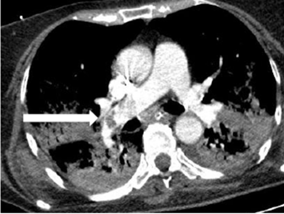
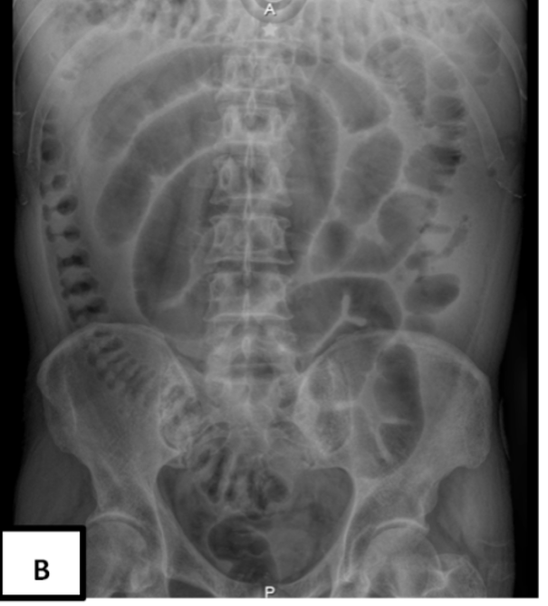
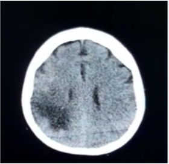

Alteraciones de la COVID-19
más allá de la insuficiencia respiratoria
Dr. Ignacio Alberto Méndez de Jesús
Consejero del Consejo Mexicano de Medicina Crítica
ignacio.mendez.300@hotmail.com
Dra. Nancy Allin Canedo Castillo
Presidente del Consejo Mexicano de Medicina Crítica
drakndo@hotmail.com
Dra. Elizabeth Mendoza Portillo
Consejera del Consejo Mexicano de Medicina Crítica
elizabeth.mepor@gmail.com
La infección por SARS-COV-2 es la enfermedad
emergente más importante del siglo.
En diciembre del 2019, se identificó un brote de casos de neumonía de causa viral en la ciudad de Wuhan, ubicada en la provincia de Hubei, China. El causante de esta enfermedad se identificó, en tiempo récord, como un nuevo virus perteneciente a la familia coronavirus que muestra un 80% de similitud con otros tipos de coronavirus ya conocidos, como el SARS-COV, detectado en el 2013 en Medio Oriente, causante también de infección pulmonar severa. Esta nueva enfermedad respiratoria se propagó rápidamente a otras partes de China, cruzando las fronteras internacionales y esparciéndose en diferentes partes del mundo durante un periodo corto.1
Esta nueva infección viral causante de enfermedad con afectación pulmonar fue denominada por la Organización Mundial de la Salud (OMS) como COVID-19 y el virus causante recibió el nombre de SARS-COV-2, por su similitud con el virus de aparición precedente. El 11 de marzo del 2020, la OMS declaró a este proceso viral pandemia por las dimensiones de contagio alcanzadas para entonces.2
Como se ha descrito a lo largo de este tiempo de pandemia, las manifestaciones más frecuentes de la infección viral son los síntomas respiratorios y la fiebre en la mayoría de los pacientes que debutan con COVID-19, sin embargo, existen más manifestaciones poco difundidas en la población como las gastrointestinales, neurológicas, cardiacas, renales y dermatológicas, que no son tan infrecuentes como lo han demostrado los estudios y que por su ubicación fuera del aparato respiratorio se conocen como extrapulmonares.
El virus al entrar al cuerpo humano necesita unirse al receptor de una proteína con función de enzima (catalizador), denominada enzima convertidora de angiotensina-2 o ACE2, como puerta de entrada del coronavirus, esta enzima se ubica en múltiples tejidos extrapulmonares. La infección del virus en los sitios donde se encuentra la ACE2 produce el daño directo y la activación de la inflamación del sistema inmune y de la coagulación, generando coágulos.
Es bien conocido que el SARS-COV-2 produce enfermedad pulmonar sustancial en diferentes grados de severidad, que van desde la neumonía hasta el síndrome de Distrés Respiratorio Agudo, que amerita que el paciente sea intubado, conectado a un ventilador mecánico y sea tratado en la unidad de cuidados intensivos; no obstante, los médicos hemos observado a lo largo de la pandemia muchas manifestaciones extrapulmonares del COVID-19 asociadas al proceso pulmonar,3 por ejemplo, la lesión renal, frecuentemente asociada a pacientes con COVID-19 de severo a crítico, con presencia que va del 1 al 30%. Respecto de la lesión renal se especula que el virus se une a los ACE2 en los túbulos que conforman el riñón, causando inflamación llamada glomerulopatía, procesos obstructivos por lesión de las células del riñón y pérdida de proteínas. Es importante recalcar que el riñón se afecta tanto por la infección del virus como por la baja de oxígeno, provocada por la afección severa del pulmón y por los procesos infecciosos que se añaden a la estancia del paciente en la unidad de cuidados intensivos.
El corazón, por su parte, se lesiona en 20% de los pacientes. La manifestación de la afectación cardiaca se conoce como miocarditis (inflamación del músculo cardiaco), endocarditis (inflamación de las cavidades del corazón), derrame de líquido por inflamación de la bolsa que contiene y protege al corazón, llamado pericardio; lo anterior se puede diagnosticar con pruebas de sangre y estudio electrocardiográfico. Otras complicaciones comunes observadas a nivel cardiovascular son las arritmias o palpitaciones,4 cuya severidad fue tal que la muerte cardiaca súbita se ha reportado hasta en 11% de los casos entre aquellos pacientes que no tenían antecedentes de cardiopatía isquémica (infartos o angina de pecho). Estos resultados sugieren que la causa de la muerte podría ser un infarto agudo al miocardio y coágulos que se alojaron en el pulmón, condicionando una tromboembolia pulmonar masiva.4
Tromboembolia pulmonar

Otras complicaciones son las intestinales en los pacientes graves hospitalizados. El estudio del Dr. Zheng y colaboradores informó que las manifestaciones gastrointestinales de la COVID-19 fueron de 50%, con síntomas como náuseas (17,3%), diarrea (12,9%), falta de apetito (12,2%), dolor abdominal (5,8%), eructos (5%) y vómito (5%).2 Existe la hipótesis de que el virus puede sobrerregular la expresión de receptores de los ECA2, lo cual permite una mayor penetración del virus en las células digestivas.
Existe el eje intestino-pulmón, que al modificar y alterar la composición de la microbiota, interactúa con el sistema inmune de la mucosa intestinal, favoreciendo un aumento en la producción de sustancias de la inflamación (citocinas), lo cual ayuda al proceso de lesión a nivel pulmonar y gastrointestinal.5,6,7 La lesión puede ser tan intensa que favorece la aparición de coágulos en el sistema arterial abdominal, produciendo trombosis mesentérica, con lo que el intestino se queda sin sangre, dando lugar a perforaciones a nivel de intestino delgado y grueso incrementado la inestabilidad y la muerte.2,3,8,9,10
Manifestaciones gastrointestinales. Perforación de ciego

El cerebro no escapa a la infección por SARS-COV-2, de hecho, se afecta de 30 a 40%, en su afectación se reconocen tres presentaciones clínicas: del sistema nervioso central, caracterizadas por dolor de cabeza, mareos, alteración de la consciencia, enfermedad vascular cerebral isquémica-hemorrágica y epilepsia.
Sistema nervioso periférico, se reporta dolor de tipo neuropático, disminución del gusto, olfato y el apetito. Y finalmente lesiones del músculo esquelético.4,7,8,10,11 Otros órganos y sistemas afectados se comentan en el cuadro 1.
Infarto cerebral izquierdo

RM de cráneo. Corte coronal en T2. Paciente con dilatación del ventrículo izquierdo y leucomalasia periventricular como secuelas de encefalopatía hipóxico-isquémica neonatal.
RM de cráneo. Corte coronal en T2. Paciente con dilatación del ventrículo izquierdo y leucomalasia periventricular como secuelas de encefalopatía hipóxico-isquémica neonatal.
Lo expuesto anteriormente tiene por objetivo explicar con más detalles los estragos que causa la infección por SARS-COV-2, las múltiples afectaciones orgánicas, las complicaciones observadas derivadas y el impacto de la COVID-19 en la mortalidad de los pacientes a los que nos enfrentamos los médicos en la unidad de cuidados intensivos.9